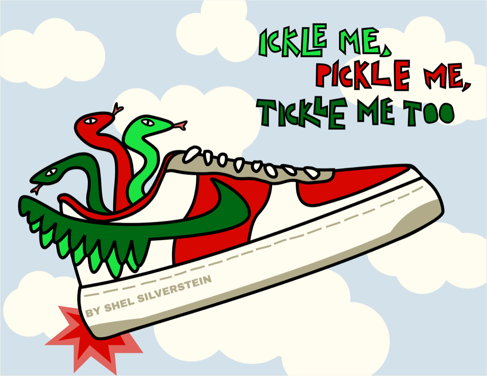
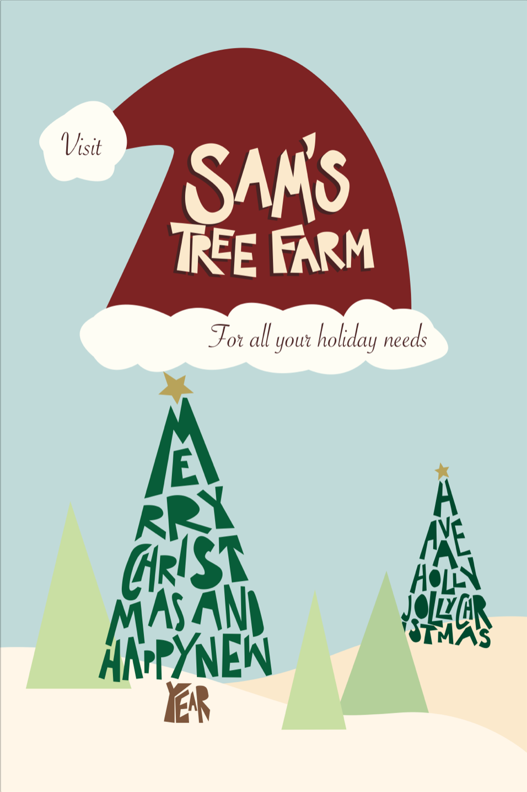

The projects on this page were all created using Adobe Illustrator in a Graphic Design class that I took previously. I really enjoyed working with vector art and creating some digital work of my own.
This first project is a trading card created about a career in the graphic design field.
Here, I was challenged to make a vector art book cover for Shel Silverstein's "Ickle Me, Tickle Me, Pickle Me Too". I had a lot of fun on this project and was proud of the outcome.
In this image, I used the lyrics from a popular Christmas song to create an illustration using typography. I liked how the trees (made of the song lyrics) looked once the final product was finished.